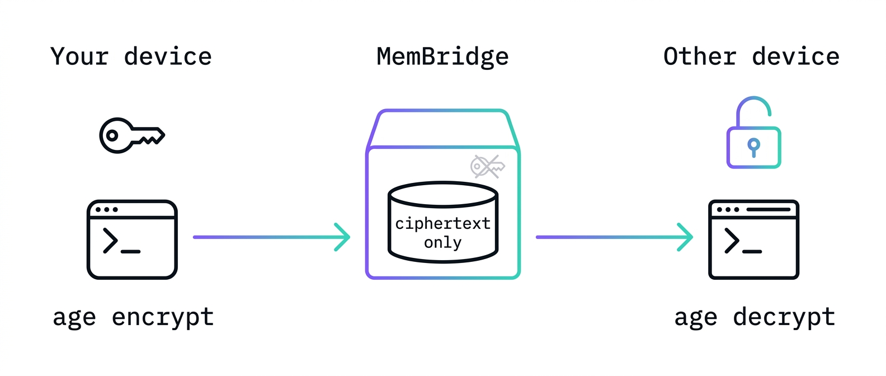
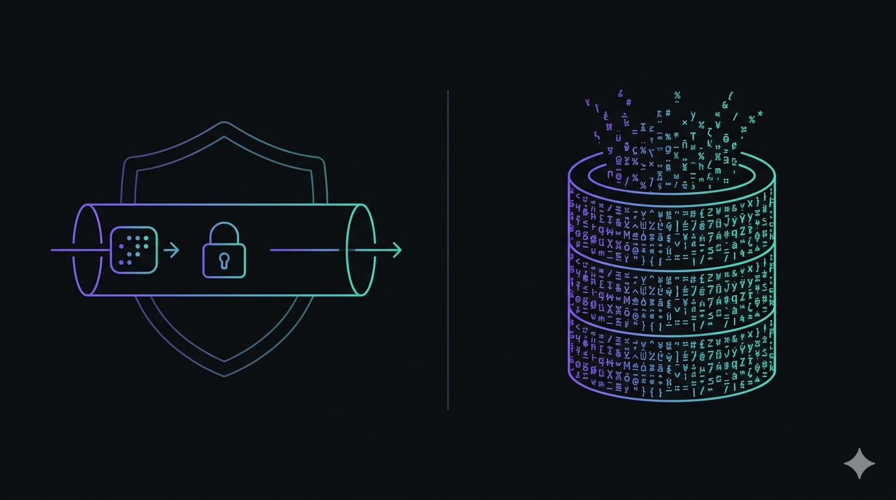
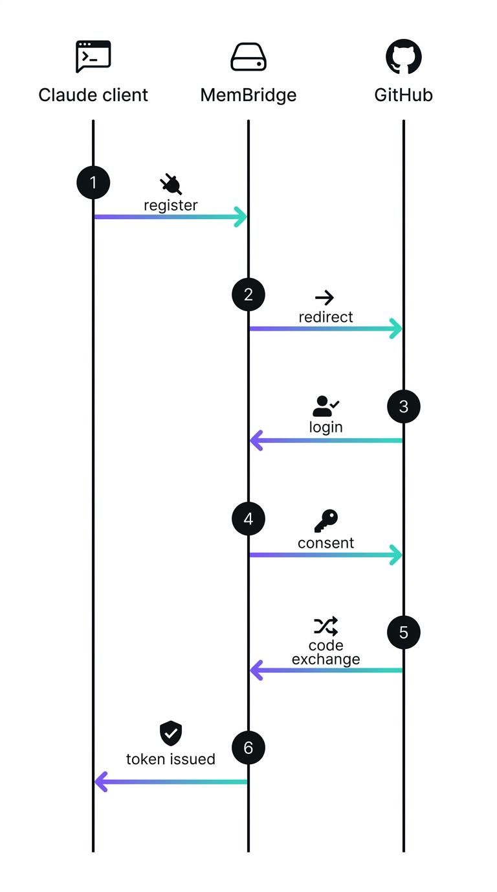
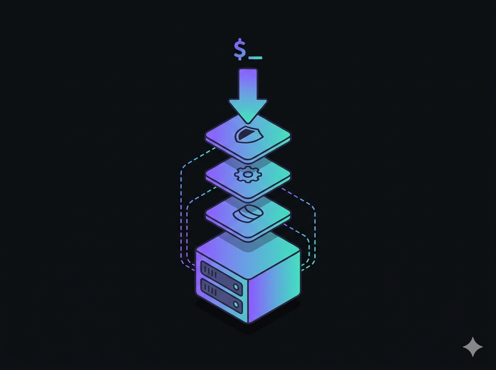

One encrypted memory.
Everywhere Claude works.
MemBridge is a tiny self-hosted bridge that keeps your personal context — notes, decisions, rules — in sync between your terminal and the browser. Stored as ciphertext, exposed to both sides as a standard MCP server.
$ claude mcp add --transport http membridge https://membridge.yaro.fr/mcp $ memory push # from Claude Code, local CLI ✓ context encrypted with age, synced. # later, in Claude.ai web… > use membridge to add a note: "ship the v2 API by Friday" ✓ note added — visible next time Claude Code pulls.
Same context, two clients, zero copy-paste
One ciphertext blob per user. Both Claude surfaces read and write it through the same MCP tools.
CLI push / pull
Bun + Postgres
MCP tool calls

Sign in with GitHub
OAuth login issues a scoped API key. No passwords, no separate account system.
Encrypted with age
The CLI encrypts fully client-side — your key never leaves your machine. MCP tool calls (from Claude Code or Claude.ai) send the key over TLS so the server can decrypt on your behalf — not zero-knowledge, but never persisted.
Sync through one tiny API
A single ciphertext row per user. push/pull from the CLI, get_context/add_note/search from MCP.
Encrypted at rest. Standards-based in transit.
No custom auth scheme to audit — OAuth 2.1, PKCE, and dynamic client registration, all over TLS.

🔐 age encryption
Context is stored as ciphertext only. The CLI's push/pull
are end-to-end — the server never sees your key. MCP tool calls pass the key as an argument over TLS
so the server can decrypt on your behalf (necessary for Claude.ai web, which has no local crypto) —
never persisted, but not zero-knowledge.
🪪 GitHub OAuth + API keys
Identity comes from GitHub. API keys are sha256-hashed at rest; the raw key is shown exactly once.

🔁 OAuth 2.1 + PKCE for MCP
Claude Code and Claude.ai authorize via standard dynamic client registration and PKCE — no manually-managed client secrets.
🚧 Rate limited
Per-user sliding window rate limiting protects the API from runaway clients.
Self-host it in one docker compose up
MemBridge is a Bun + Hono app with one Postgres dependency. No managed services required.

$ git clone https://github.com/TidyMaze/membridge && cd membridge $ cp .env.example .env # set GH_CLIENT_ID / SECRET / BASE_URL $ docker compose up -d --build ✓ http://localhost:3000/health → {"ok":true} # put a reverse proxy with automatic HTTPS (e.g. Caddy) in front, # point it at the app container, and you're done.